People
Faculty
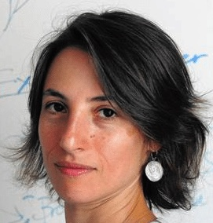{kind=link}
Marina Bedny Marina Bedny CV 410-516-2841 marina.bedny at jhu dot edu 231 Ames Hall
Post-Doctoral Fellows
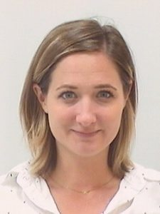{kind=link}
Lisa Musz emusz1 at jhu dot edu Research Interests: How do the things that we see and the things that we talk about influence what we know about the world, and how is this information organized in the brain? I am interested in studying the roles of vision and language in knowledge, and how changes in experience and context can alter neural representations of semantic memory.
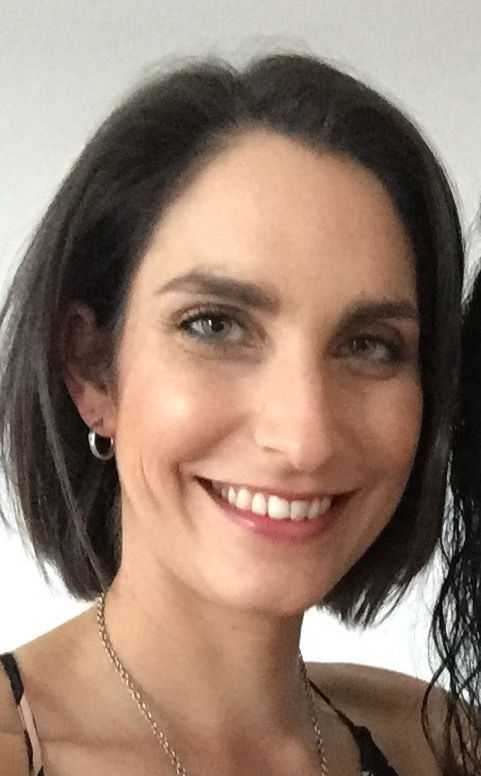{kind=link}
Liz Saccone esaccon2 at jhu dot edu Research interests: I am interested in how our visual and physical experience with things in the world influence our conceptual understanding of, well, everything! Currently in the lab I am studying blind individuals’ understanding of phenomena that are thought to be primarily visual - like scenes and places.
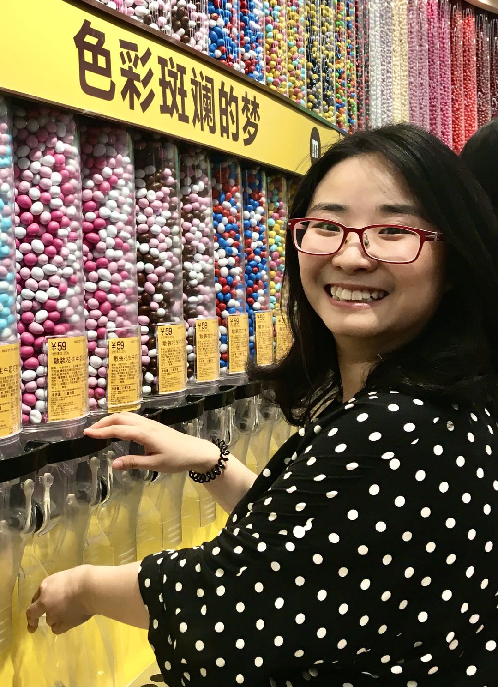{kind=link}
Mengyu Tian mengyutian at jhu dot edu Research Interests: I am interested in how the brain represents different writing systems, such as English vs. Chinese or Braille vs. Sighted reading. I am also interested in how sensory loss shapes neural circuits, using functional and structural MRI.
Graduate Students
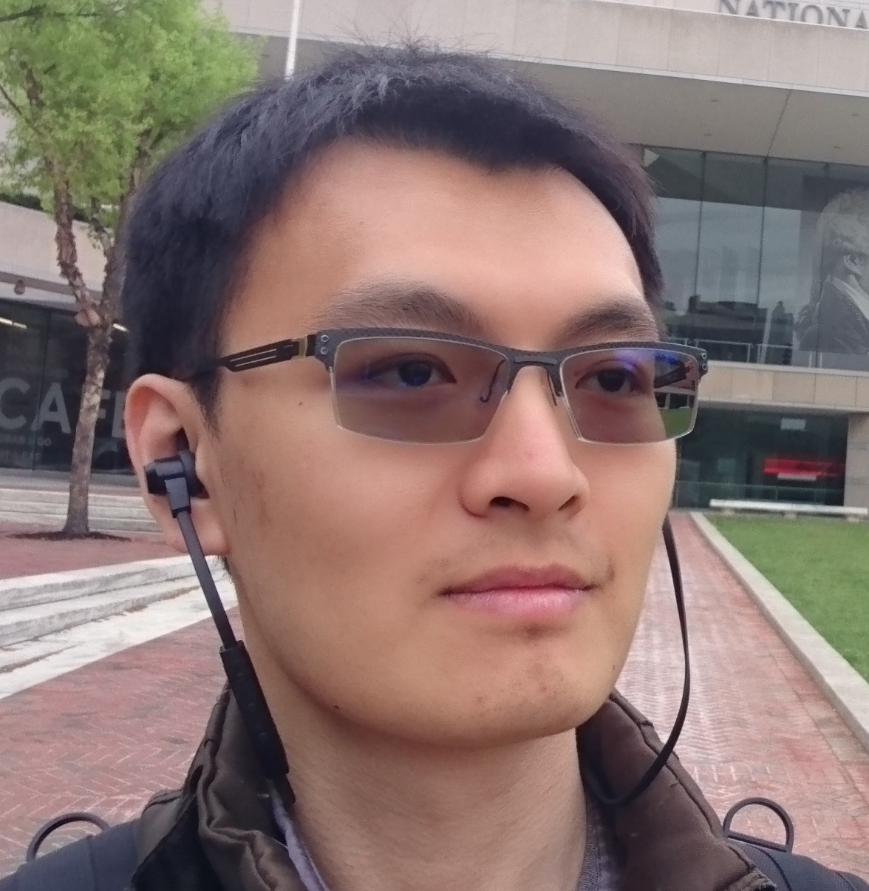{kind=link}
Yun-Fei Liu yliu at jhu dot edu Research Interests: I’m interested in the neural basis of all kinds of reading, be it normal reading, Braille reading, or even code reading. You can say what I’m doing is some kind of rudimentary mind reading—with a super bulky MRI scanner!
Lab Manager
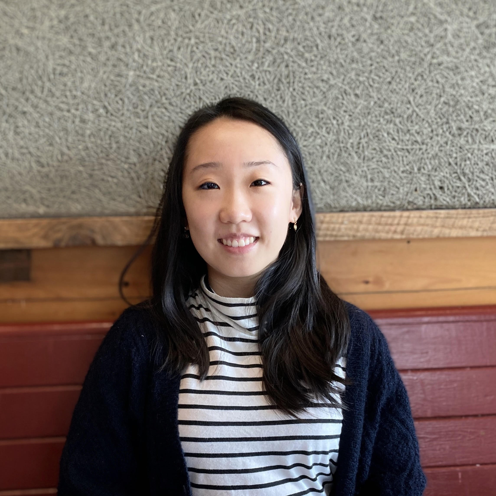{kind=link}
Ziqi Chen zchen140 at jhu dot edu Research Interests: I’m broadly interested in how the developing brain interacts with the environment as well as how neuroplasticity contributes to our functioning well-being.
Undergraduate Research Assistants
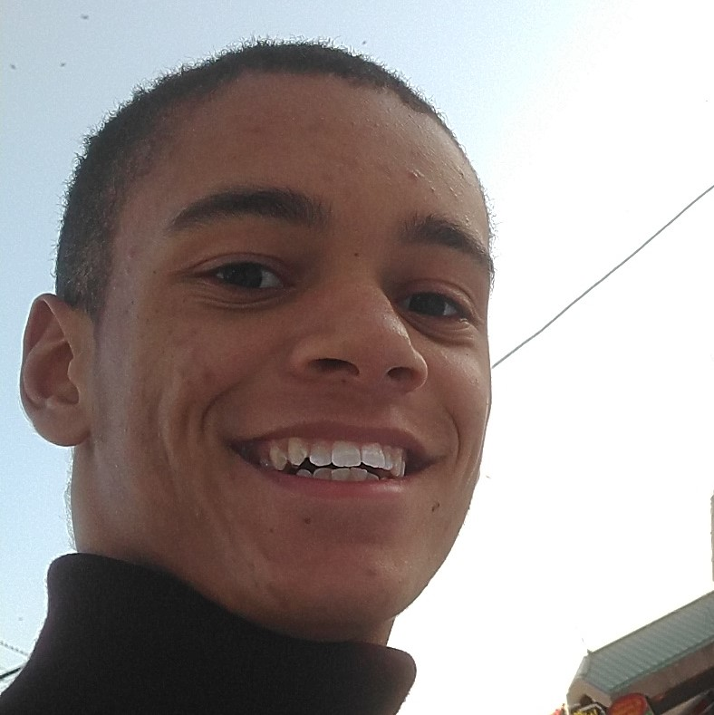{kind=link}
Rhys Gough rgough5 at jhu dot edu Research Interests: I'm interested in how our sensations contribute to the building of abstract concepts. I'm also interested in changes to neural circuitry after trauma.
{kind=link}
Grace Lee ylee192 at jhu dot edu Research Interests: I'm interested in how experience affects brain development and shapes the mind. I'm also interested in how the reorganization of the brain and the mind are correlated.
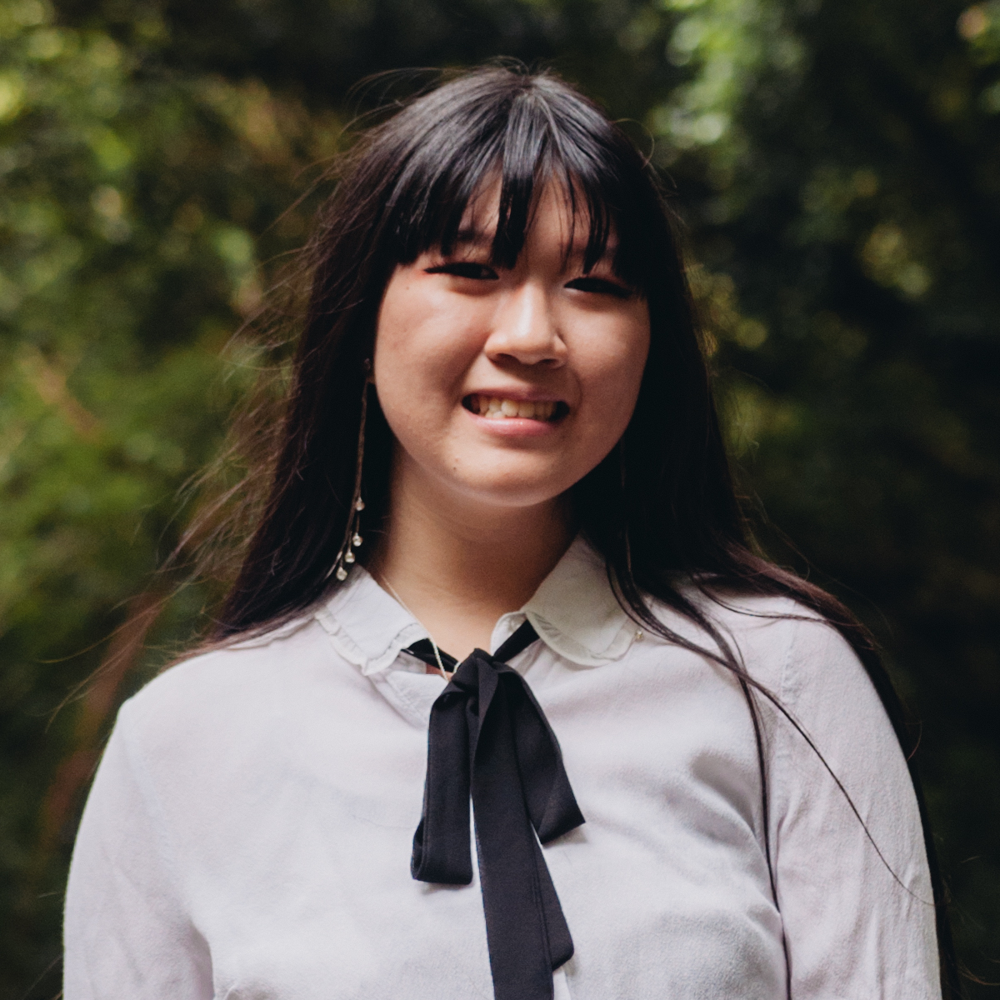{kind=link}
Carol Lu clu33 at jhu dot edu Research Interests: I am interested in studying cognition from both the neurological and psychological perspectives. In particular, I am interested in the effects of experience on cognition.
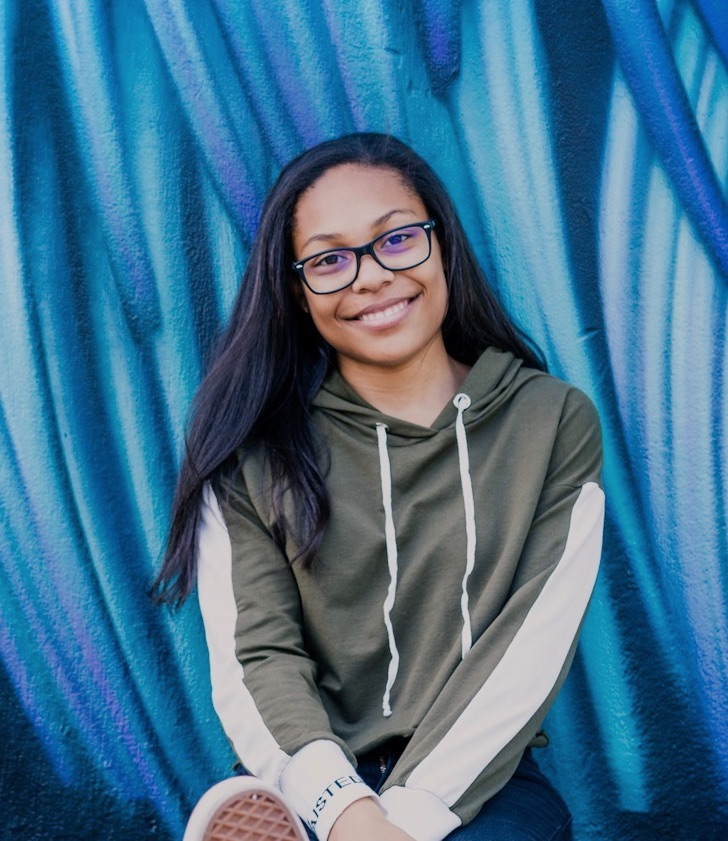{kind=link}
Zaida McClinton zmcclin1 at jhu dot edu Research Interests: I’m interested in neuroplasticity and the brain's ability to enhance itself and adapt to a variety of stimuli. I am also interested in understanding exactly how experiences are received, processed, and stored by the brain.
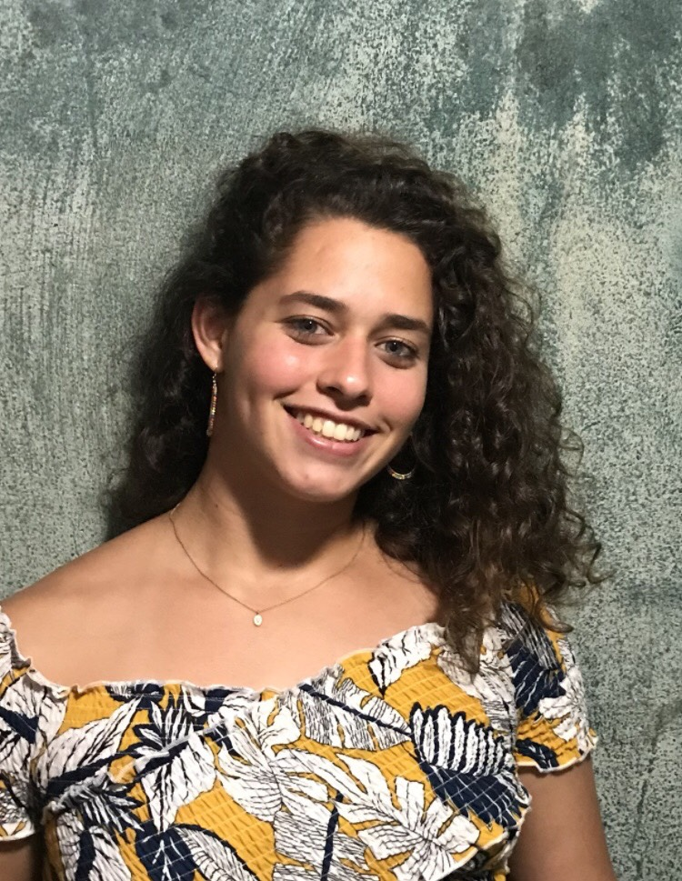{kind=link}
Verónica Montané vmontan2 at jhu dot edu Research Interests: I am interested in the brain and how different experiences help shape the brain. I'm also interested in cognition and how knowledge is affected by experience.
Alumni
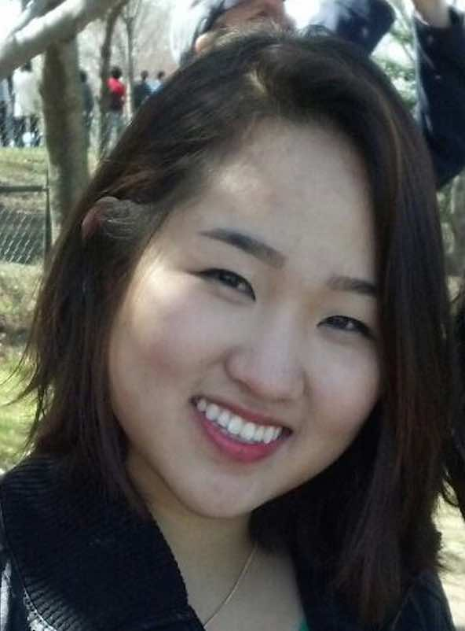{kind=link}
Judy Kim - Former graduate student (current postdoc at Yale University with Molly Crockett)
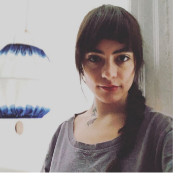
{kind=link}
Giulia Elli - Former graduate student (current postdoc at University of Michigan with Susan Gelman)
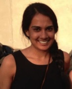
{kind=link}
Shipra Kanjlia - Former graduate student (current postdoc at Carnegie Mellon University with Jessica Cantlon)
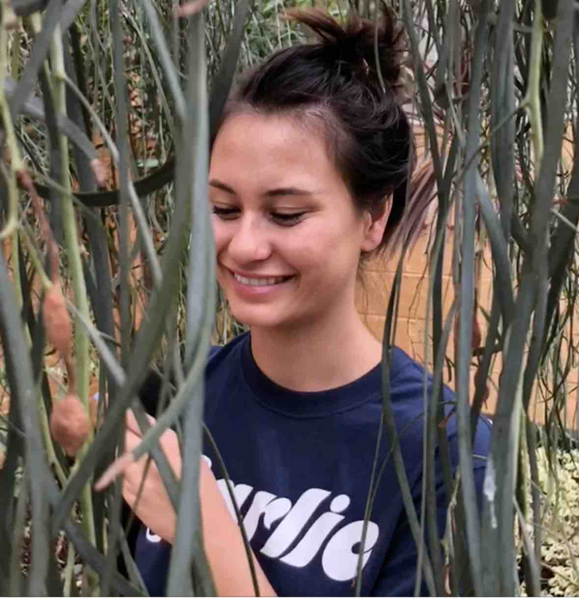
{kind=link}
Nora Harhen - Former research assistant (current cognitive science graduate student at University of California Irvine)

Rita Loiotile - Former graduate student (current intern at Insight Data Science)
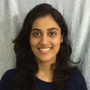
{kind=link}
Rashi Pant - Former research assistant (current neuropsychology graduate student at University of Hamburg with Brigette Röder)
{kind=link}
Connor Lane - Former research assistant (current computer science graduate student at Johns Hopkins University)
Undergraduate Alumni
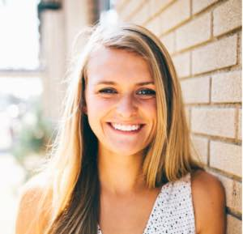{kind=link}
Erin Brush (current medical assistant at Capital Dermatology, entering medical school August 2020)